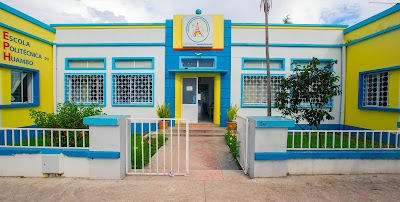

Afonso nasceu na provincia do Huambo no municipio do Huambo aos 29/04/2004, filho de Edgar Somacumbi e Milay Costa.É o primogenito de cinco filhos.
Reside no Rua da Ex-Comarca com a família.
Fez o seu ensino primário na escola primária nº 53 academico na provincia do Huambo.
Tendo concluido o primário e I Ciclo na escola misionaria Vila Seca Esparza nº244
Actualmente estuda no CEPPH
Nos tempos livres gosto de ver animes e ver videos no youtube.